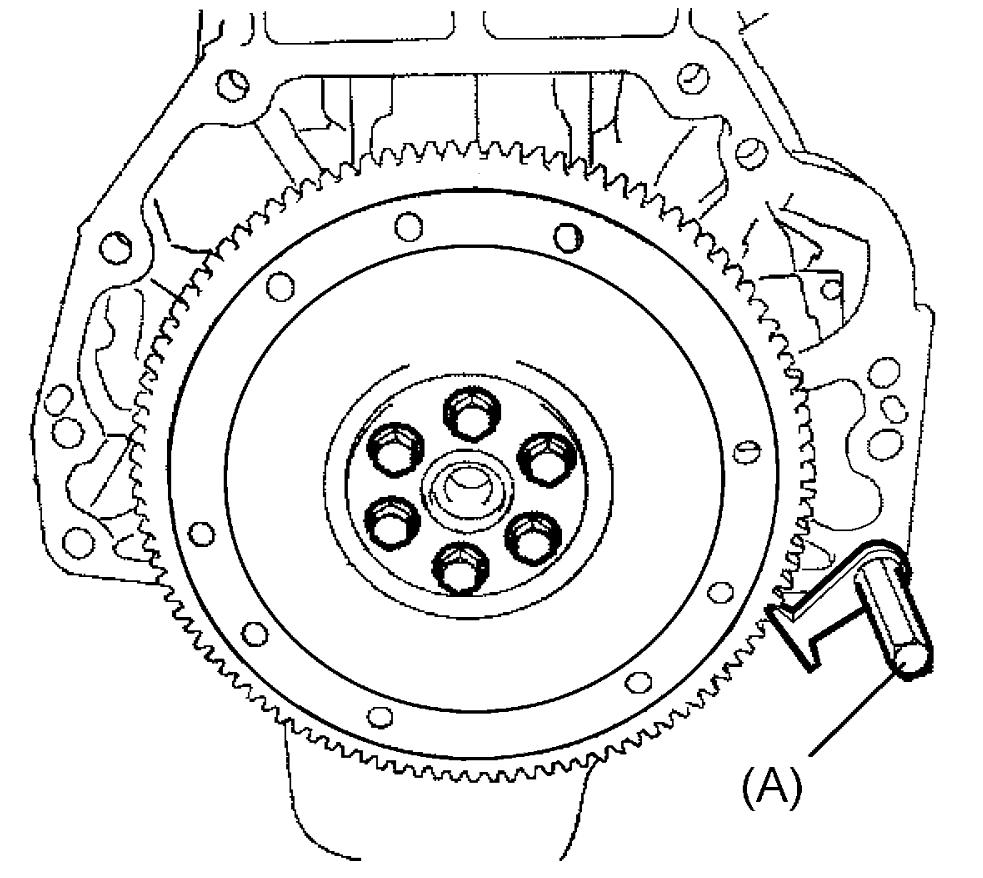
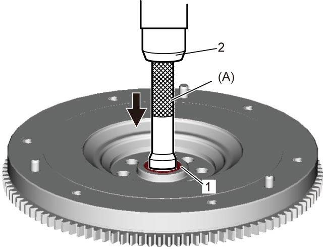

1D
| Flywheel / Drive Plate Removal and Installation |
Removal
1)For M/T model, remove clutch cover and clutch disc. 
2)For A/T model, remove transaxle assembly.
3)Install special tool to ring gear teeth to lock flywheel (M/T model) or drive plate (A/T model) as shown in figure.


 "Expand image")
4)Remove flywheel (M/T model) or drive plate (A/T model) from crankshaft.
5)For M/T model, remove input shaft bearing, if necessary.
Installation
Reverse removal procedure noting the following points.
•For M/T model, press-fit input shaft bearing (1) using special tool and hydraulic press (2).
•Install new flywheel bolts (M/T model) or drive plate bolts (A/T model).
•Install special tool in ring gear teeth to lock flywheel (M/T model) or drive plate (A/T model) as shown in figure.

 "Expand image")
•Install special tool in ring gear teeth to lock flywheel (M/T model) or drive plate (A/T model) as shown in figure.
 "Expand image")